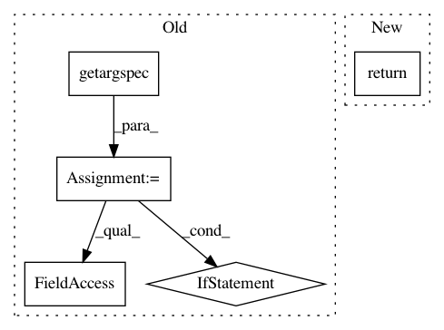

19f160b307515b3c0868915d0f044332bba109e0,skbio/util/_misc.py,,find_sentinels,#Any#Any#,37
Before Change
if param.default is sentinel:
keys.append(name)
else: // Py2
function_spec = inspect.getargspec(function)
if function_spec.defaults is not None:
// Concept from http://stackoverflow.com/a/12627202/579416
keywords_start = -len(function_spec.defaults)
for key, default in zip(function_spec.args[keywords_start:],
function_spec.defaults):
if default is sentinel:
keys.append(key)
return keys
class MiniRegistry(dict):
After Change
def find_sentinels(function, sentinel):
params = inspect.signature(function).parameters
return [name for name, param in params.items()
if param.default is sentinel]
class MiniRegistry(dict):
def __call__(self, name):
In pattern: SUPERPATTERN
Frequency: 3
Non-data size: 5
Instances
Project Name: biocore/scikit-bio
Commit Name: 19f160b307515b3c0868915d0f044332bba109e0
Time: 2016-03-24
Author: jai.rideout@gmail.com
File Name: skbio/util/_misc.py
Class Name:
Method Name: find_sentinels
Project Name: keras-team/keras
Commit Name: 023331ec2a7b0086abfc81eca16c84a1692ee653
Time: 2017-02-09
Author: francois.chollet@gmail.com
File Name: keras/utils/layer_utils.py
Class Name:
Method Name: layer_from_config
Project Name: deepmind/sonnet
Commit Name: 0944fc6e401525d348f3090af237706d506ac204
Time: 2017-06-21
Author: gabrielbm@google.com
File Name: sonnet/python/modules/experimental.py
Class Name:
Method Name: reuse_vars